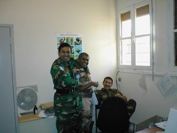
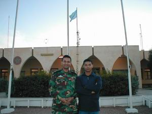

Murphy's Laws for MINURSO UNMOs
- The Antonov is always early, the helo is always late.
- Never argue with French. Never drive with Chinese. Never drink with Russians.
- "Say again all after good morning" is the proper radio procedure (see also you are coming is broken and stupid, "over" and "roger, wilco, over and out".
- All Moroccan road engineers are raging alcoholics.
- Saharan flies are not high in protein and definitely not tasty.
- The shortest distance between two points is not always a straight line.
- Driving is not a right, but it can be very very wrong sometimes.
- A 200 meters GPS variation is not acceptable when searching for a UXO.
- If you are the man, you better be the man, or somebody else is gonna be the man.
- What goes on CTO, stays on CTO.
- Nothing moves in the heat of the day except for flies, camels and UNMOs.
- If it's stupid but it works, then it is not stupid - MINURSO hand held weather wizard.
- Two most important words in MINURSO: MSA and CTO.
G6's Laws for MINURSO UNMOs
- When computing, whatever happens, behave as though you meant it to happen.
- When you get to the point where you really understand your computer, it's probably obsolete.
- The first place to look for information is in the section of the manual where you would least expect to find it.
- When the going gets tough, UPGRADE.
- For every action there is an equal and opposite malfunction.
- To err is human... to blame your computer for your mistakes is even more human, it's downright natural.
- He who laughs last, probably has a backup.
- The number one cause of computer problem is computer solutions.
- A complex system that doesn't work is invariably found to have evolved from a simpler system that worked just fine.
- A computer program will always do what you tell it to do, but rarely what u want it to do.
This portion of the page is specially contributed by Capt Aaron KOENIGSEKER (US Army-TS Mab, Jan 01-Jun 01)
Memories in Images


